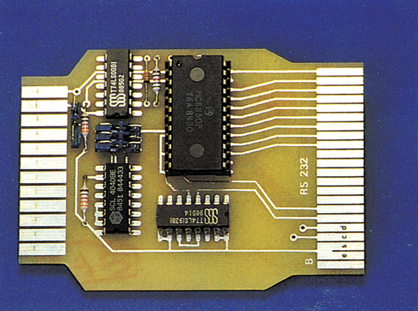

Turbo-C 64 in der DFÜ
Für alle Besitzer eines Floppy-Speeders, der keine RS232-Routinen enthält, gibt es jetzt eine hardwaremäßige Schnittstelle als Alternative.

Floppybeschleuniger schön und gut, mag sich mancher denken, wenn er sich den Markt für schnellere Diskettenlaufwerke einmal betrachtet. Doch dann kommt die kalte Ernüchterung: Speeder enthalten oft keine RS232-Routinen mehr.
Das kann sich mit dem folgenden Produkt jedoch ganz schnell ändern. Wir möchten Ihnen ein System vorstellen, das eine hardwaremäßige RS232-Schnittstelle beinhaltet, die über den Expansion-Port an den C 64 angeschlossen wird. Somit ist eine Kompatibilität zu Speedern, die den User-Port belegen, gewährleistet.
Außerst interessant an dem Produkt ist die Tatsache, daß die Übertragung durch einen auf der Platine enthaltenen Baustein gesteuert wird (UART 6850 von Motorola, der wohl meist verwendete Baustein auf diesem Gebiet). \
Die höchste Übertragungsrate, die mit der Hardware-Schnittstelle erreicht wird, beträgt 9600 Bit pro Sekunde. Zur Erinnerung: Der C 64 in der Grundversion erlaubt gerade 2400 bit/s, wobei die Betriebssicherheit jedoch schon stark beeinträchtigt wird.
Am Anschluß für die Übertragungsleitung stehen alle Signale mit TTL-Pegeln zur Verfügung. Eine Version mit Spannungen von plus und minus 12 Volt ist laut Dichte Elektronik in Vorbereitung. Der Anschluß ist kompatibel zum User-Port des C 64, so daß die herkömmlichen Kabel verwendet werden können. Für Anwender, die die Signale invertiert benötigen, sind zusätzliche Anschlüsse herausgeführt, so daß insgesamt keine Kompatibilitätsprobleme auftreten dürften.
Das System besteht jedoch keineswegs nur aus der Platine mit der RS232-Schnittstelle (siehe Bild). Mitgeliefert wird außerdem ein komplettes Terminal-Programm mit dem Namen »Terminal 64«, das speziell an die Hardware angepaßt ist. Damit Sie sich auch eigene Programme für die Schnittstelle schreiben können, wurde die Treibersoftware jedoch extra gelassen. Sie muß vor dem Starten des Terminalprogramms initialisiert werden.
Das Terminalprogramm dürfte die meisten Anwender voll zufriedenstellen. Es enthält einen Texteditor, einen Übertragungspuffer von fast 48 KByte Kapazität und ermöglicht sowohl die reine Textübertragung als auch die Übertragung von Programmdateien.
Der Texteditor ist mit den wichtigsten Funktionen ausgestattet. Sie erlauben das Laden und Speichern von Texten, das Drucken einer Datei und das Suchen von Begriffen. Dazu kommt der Betrieb des Pufferspeichers, der das bequeme Austauschen und Ersetzen von Textteilen gestattet.
Insgesamt also eine recht runde Sache, die ihren Preis von 98,50 Mark sicherlich wert ist. Da kommt sowohl der Einsteiger als auch der fortgeschrittene DFÜ-Anwender vollauf seine Kosten.
(ks)Info: Christoph Dichte, Elektronik Service, Fährstraße 33, 2212 Brunsbüttel, Telefon 04852/87002